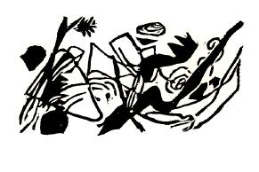

sanat ve sanatçılar
Sanat eseri, gizemli ve anlaşılmaz bir biçimde sanatçıdan doğar, yaşamını ve varlığını ondan alır. Ne tesadüfîdir, ne de mantıksız; maddi yaşamı da ruhsal yaşamı da belirli ve anlamlı bir güce sahiptir. Varolmaktadır ve ruhsal bir atmosfer yaratacak güce sahiptir. İyi bir eser olup olmadığı da bu içsel noktadan bakılarak söylenebilir. Formunun kötü olması demek, anlamının, ruhta uygun titreşimler yaratamayacak kadar zayıf olması demektir.[66] Bu yüzden bir resim Fransızların dillerinden düşürmedikleri değerlere sahip olsa da iyi resmedilmiş olmayabilir. Yalnızca ruhsal değeri tam ve tatmin edici olduğunda iyi resmedilmiştir. İyi çizim, bu içsel değer yok edilmediği sürece değişmeyen çizimdir; anatomi, botanik ya da başka bir bilim açısından doğruluk taşıyıp taşımaması bir anlam ifade etmez. Doğal formu ihlal etmek diye bir sorun olamaz, önemli olan sanatçının nasıl bir forma ihtiyaç duyduğudur. Aynı şekilde, renkler de doğada bulundukları içine değil söz konusu resim için gerekli oldukları için kullanılır. Sanatçının, kullandığı formu gerekçelendirmesi gerekmez, aksine, sanatçının görevi, yalnızca ihtiyacını karşılayan formları kullanmaktır. Anatomi açısından da benzer başka konularda da, malzeme seçiminde sanatçıya mutlak özgürlük verilmeli. Böylesi bir ruhsal özgürlük, yaşamda olduğu gibi sanatta da gereklidir.[67]
Bununla birlikte, bilimsel ilkeleri sorgusuz sualsiz takip etmenin, bilgisizce ve boş yere reddetmek kadar kötü olmadığını belirtmek gerek. Birincisi en azından maddi nesneleri taklit etmektedir, bu da bir işe yarayabilir. [68] İkincisi düpedüz bir ihanettir ve karışıklığa neden olur. İlki ruhsal ortamı çoraklaştırır, ikincisi ise zehirler.
Resim bir sanattır ve sanat, geçici, yalıtılmış ve belirsiz bir üretim değildir; insan ruhunun geliştirilmesi ve arındırılması, yani ruhsal üçgenin yükselmesi için kullanılması gereken bir güce sahiptir.
Sanat bu işten el çekerse, köprü düşer ve geriye bir yarık kalır. Sanatın yerini tutabilecek başka bir güç yoktur. İnsan ruhunun güçlendiği dönemlerde sanatın da gücü artar. Çünkü sanat ve ruh sıkı sıkıya bağlıdırlar ve birbirlerini tamamlarlar. Ruhun inançsızlıkla boğulduğu zamanlardaysa, sanat amaçsızlaşır ve sanat yalnızca sanat içindir denir.[69] Sanatla ruh arasındaki bağ sanki zehirlenmiş, bilinç ise yitmiştir. Sanatçıyla izleyici birbirlerinden uzaklaşır ve sonunda izleyici sanatçıya sırtını döner ya da ona, becerisi ve ustalığı alkışa layık bir hokkabaz gözüyle bakmaya başlar. Sanatçının konumunu doğru ayarlaması, sanatına ve kendisine karşı bir görevi olduğunu, kral değil ulu bir amacın hizmetkârı olduğunu fark etmesi çok önemlidir. Sanatçı ruhunun derinliklerine inmeli, onu inceleyip geliştirmeli ki sanatının bir temeli, bir anlamı olsun, yoksa elden ayrı düşmüş, işe yaramaz bir eldiven gibi kalıverir.
Sanatçının söyleyeceği bir şey olmalı; çünkü amaç bir formda ustalaşmak değil formu içsel anlamına kavuşturmak.[70]
Sanatçı hazlar peşinde gününü gün etsin diye dünyaya gelmemiştir; aylak yaşamamalıdır. Yerine getirmesi gereken çetin bir görevi vardır ve bu görev çoğu zaman çekilmesi gereken bir çile gibidir. Duygu, düşünce ve hareketlerinin, eserine zemin teşkil edecek ham malzemeler olduğunu, sanatında özgürse de yaşamında özgür olmadığını bilmelidir.
Sanatçının, sanatçı olmayanlara karşı üç sorumluluğu vardır: (1) Sahip olduğu yeteneğin karşılığını vermelidir. (2) Herkes gibi onun duygu, düşünce ve hareketleri de saf ya da zehirli bir ruhsal atmosfer yaratır. (3) Bu düşünce ve eylemler, ruhsal atmosferi etkileyecek olan eserlerinin de malzemesidir. Peladanın dediği gibi, sanatçı yalnızca muazzam gücünden dolayı değil, büyük görevlerinden dolayı da kraldır.
Sanatçı güzelliğin hizmetindeki bir rahip olsaydı da güzellik yine yalnızca içsel ihtiyaç ilkesine göre aranacak ve o ihtiyacın büyüklüğüne ve yoğunluğuna göre ölçülecekti.
Güzel olan, içsel ihtiyaçla meydana gelen ve, ruhtan fışkıran şeydir.
Ruhun ilk savaşçılarından ve ilk modern sanatçılarından olan Maeterlinck şöyle der: “Dünyada ruh kadar güzelliğe düşkün, onu böylesine içine çeken başka bir şey yok. Bu yüzden, kendilerine güzellik veren bir ruhun egemenliğine pek az ölümlü karşı koyabilir.”[71]
Ruhun bu özelliği de, tıpkı bir yağ gibi, üçgenin ileri ve yukarı doğru olan, ağır, neredeyse görünmez, fakat karşı konulmaz hareketini kolaylaştırır.
